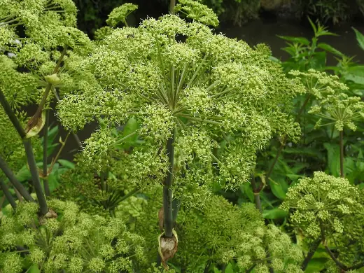

Main course · Popular in Northern Norway and Western Norway
Angelica and fish (kvann)
Angelica and fish (kvann) is made with wild garden angelica, a favourite in Northern Norway and Western Norway.

How do you make angelica and fish (kvann)?
Young kvann stems cooked with fish, after Sámi and coastal tradition.
Wild ingredients
- Garden angelica (Angelica archangelica): in season June to July
Watch the recipe

Video: TeachEthnobotany on YouTube